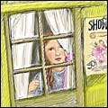

All | Foundation Truth | Treasures of the Kingdom | Dear Princess | Books | Sermons | Articles | Tracts

Amy C. Walton, 1877
Copyright: Public Domain
Main subject: Story
Published: 2004
Last edited: November 27, 2004
“Rosalie,” said her father…. “Come along!” So Rosalie had to leave her poor mother. And instead of singing the soothing words of the hymn, she had to repeat again and again the foolish and senseless words which had fallen to her share in the new play.
from A Family Secret